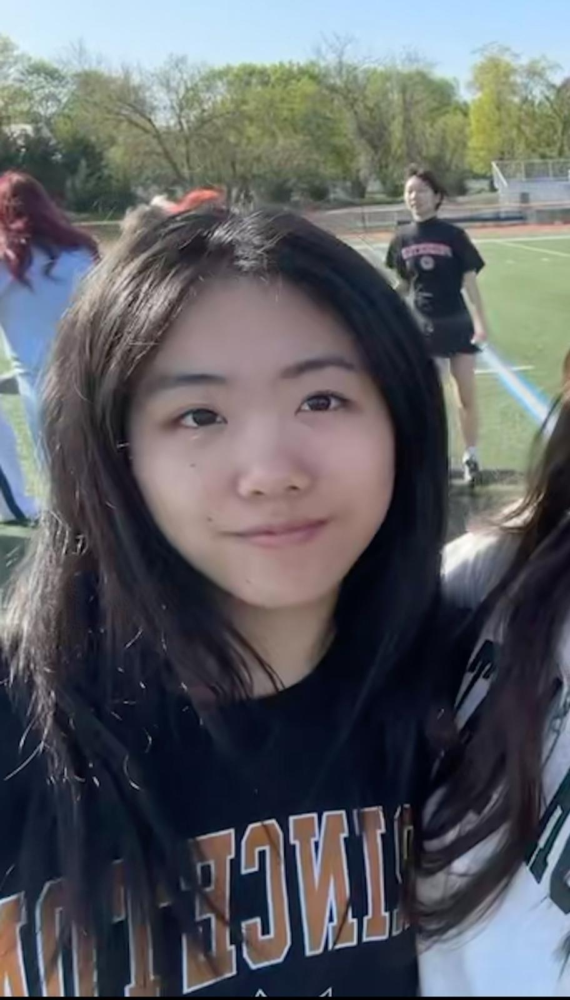
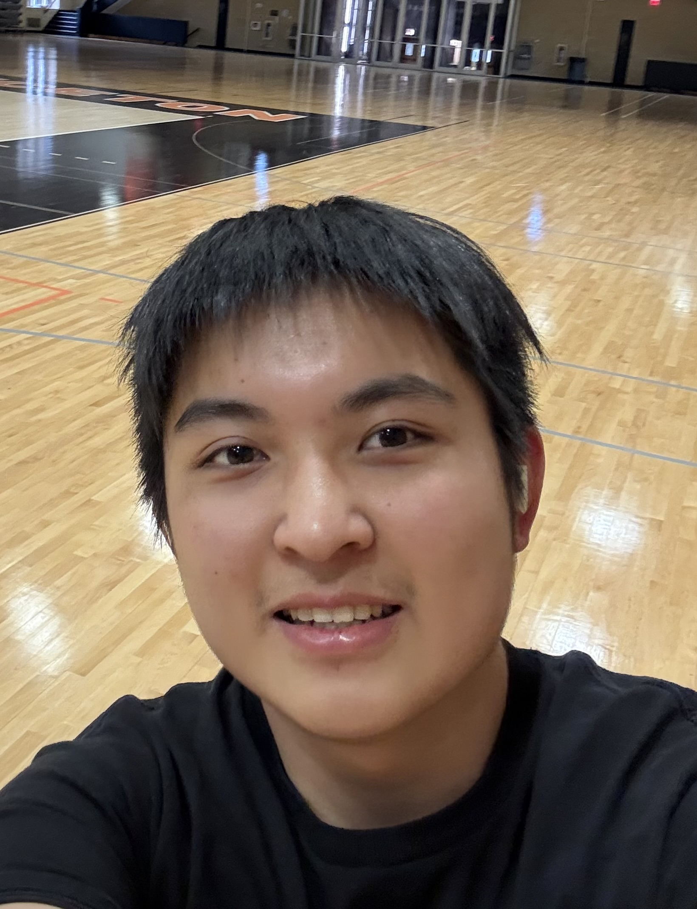
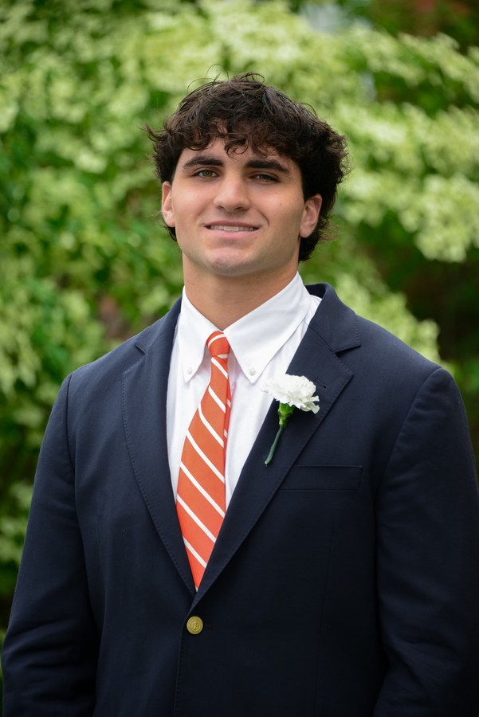

Club Calendar
View upcoming meetings, tournaments, and events. All times are Eastern.
Come By
When & where
We meet every Friday from 7:00 to 9:00 PM at Campus Club, with boards and clocks provided, and all University affiliates and their guests are welcome.
Get in Touch- MeetingsFridays, 7:00–9:00 PM
- LocationCampus Club, 5 Prospect Ave
- DuesFree for all students
- Emailprinceton.chess.club@gmail.com
Our mission
We believe everyone should know how to play chess and have access to over-the-board games.
This organization is open to all Princeton University students interested in supporting our mission, regardless of identity, such as race, sex, ethnicity, national origin, or other protected characteristics.
Meet the team

Merric Hu
Merric is a member of Princeton's Class of 2028 and serves as Co-President for the Princeton Chess Club. Outside of chess, he enjoys golfing, playing tennis, and running. His favorite place to eat on Nassau is SC House.
Steve Ta
Steve Ta is a member of the Class of 2028 and serves as Co-President of the Princeton Chess Club. Outside of chess, he enjoys soccer, GPT, and Claude-maxxing. His favorite place on Nassau Street is SC House.

Quinn Blumenthal
Quinn Blumenthal is a junior at Princeton University majoring in Physics with a minor in Statistics and Machine Learning. He is the Vice President of the Princeton Chess Club and teaches chess classes at the Princeton Adult School. Along with chess, Quinn plays percussion in the African Music Ensembles and is on the executive board of Sunrise Princeton, where he works on local climate activism and environmental justice efforts. He also enjoys running, cycling, swimming, and otherwise spending time outdoors.
Alex Reavey-Cantwell
Alex Reavey-Cantwell is a sophomore at Princeton University planning to major in Chemistry. He serves as the treasurer of the Princeton Chess Club, managing sponsorships and funding. In addition to chess, Alex enjoys playing guitar and coaching debate. His favorite spot to eat in Nassau is Mamoun’s Falafel.

Lisa Jin
Lisa is a sophomore at Princeton majoring in ORFE. Outside of chess, she enjoys playing the viola and trying new foods. Her favorite spot on Nassau is Playa Bowls.
Leila Leibert
Leila Leibert is an undergraduate in the Operations Research and Financial Engineering department. Leila serves as Social Chair of Chess Club and is excited to help create a welcoming community for new and returning members. Originally from Marin County, Leila loves to ski, ride horses, sail with friends, throw pottery on the wheel, and travel around the world. Off campus, some of her favorite places to eat include Agricola, Maman, Belle Journée, and Playa Bowls. She looks forward to meeting everyone and making club events this year especially memorable!
Manuel Garcia San Millan
Manuel Garcia San Millan is a rising senior at Princeton University majoring in Mathematics. He serves as a Social Chair of the Princeton Chess Club, where he helps organize the club's events and gatherings. Beyond chess, Manuel is an officer for poker and plays goalie for club soccer. His favorite lunch spot in Nassau is Mediterra.

Alfred Wu
Alfred is a sophomore planning to major in Molecular Biology and serves as the club's Outreach Chair this year. In his free time he loves playing Brawl Stars and getting out for sports. He enjoys plenty of the restaurants on Nassau Street, but right now his go-to is probably MTea.

Charles Kaludis
Charlie Kaludis is a rising sophomore in the Class of 2029 and serves as the Gear Chair for the Princeton Chess Club, where he oversees the design, production, and fulfillment of official club merchandise. Outside of chess, he enjoys surfing, vibecoding, hiking, and late-night drives. His favorite place to eat on Nassau Street is Tacoria.
Suriya Gugagantha
Suriya Gugagantha is a junior at Princeton University planning to major in Mathematics and minor in Computer Science. He serves as the Web Developer of the Princeton Chess Club, where he built and maintains the Princeton Chess Club’s website, princetonchess.org. Beyond chess, Suriya is the Treasurer for Princeton's cryptography club “Plainstext” as well as an Officer in the Late Night Fund. He is also a QuestionMaker and Proctor for the Princeton University Mathematics Competition. His favorite spot for a treat in Nassau is Bent Spoon's hot chocolate with honey-roasted marshmallows, which he describes as a “life-changing experience.”
Our Club is Proudly Supported By